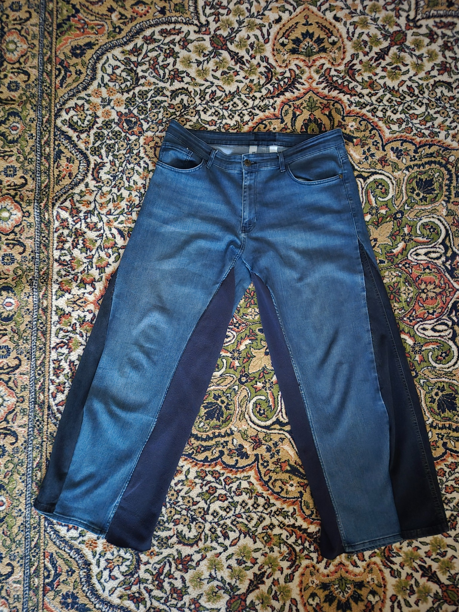
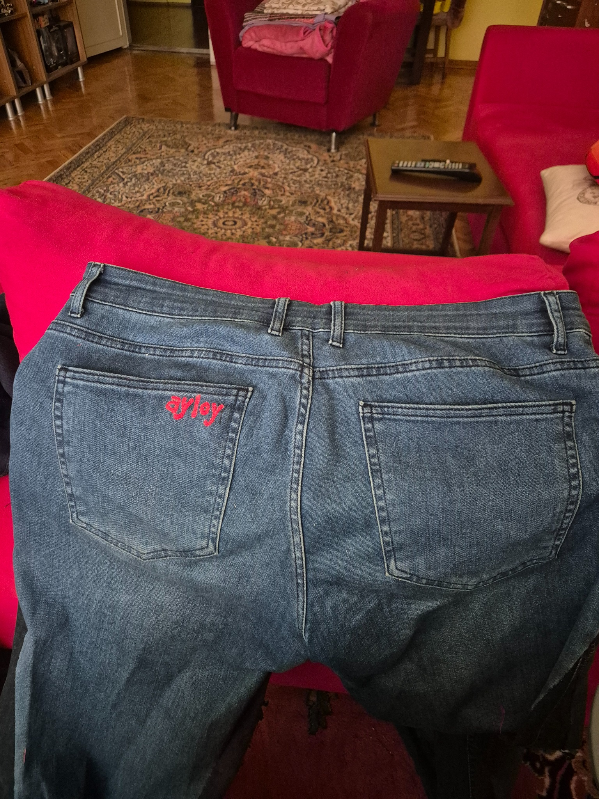
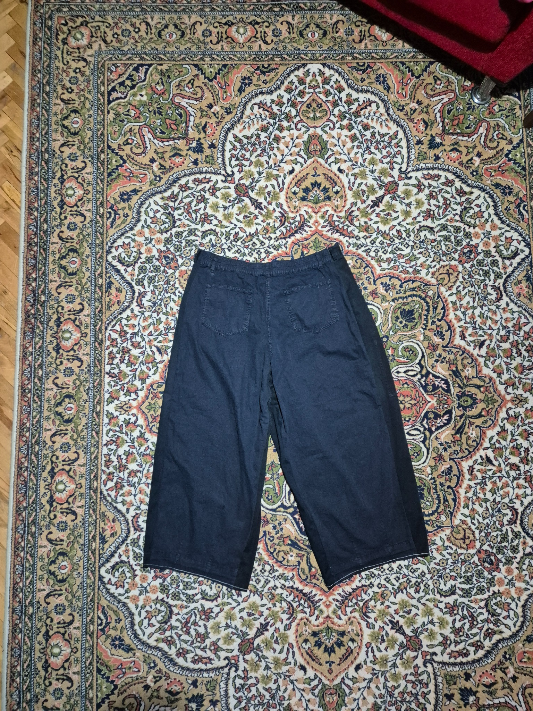
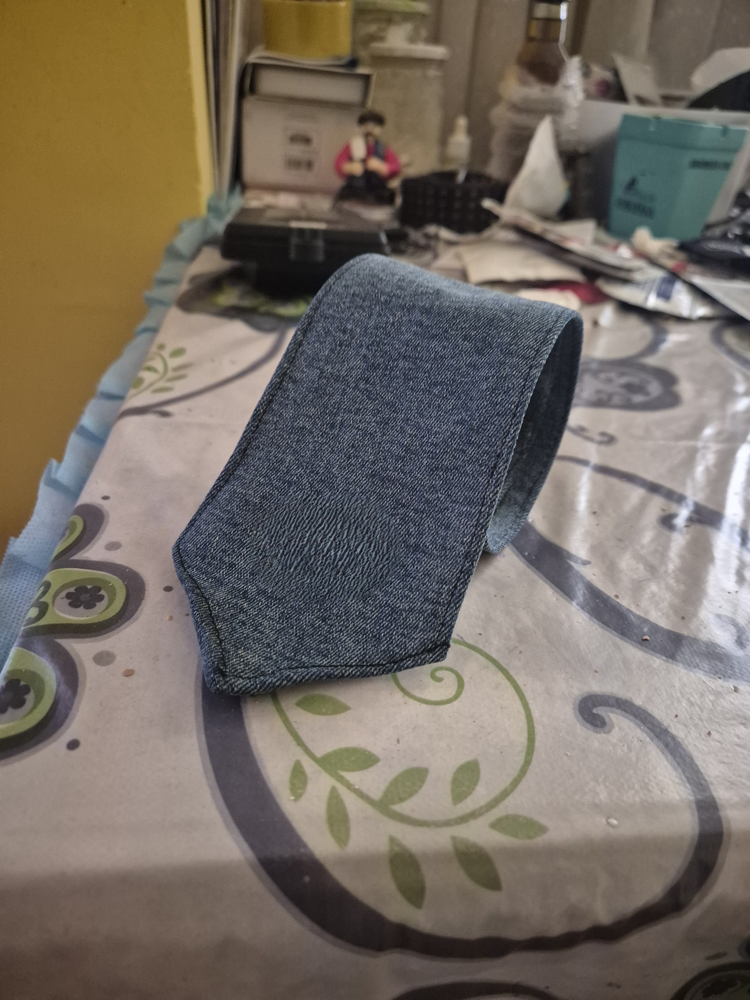
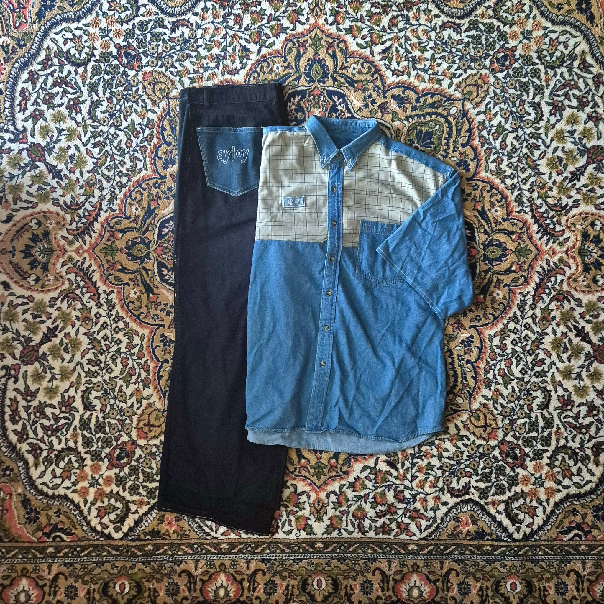
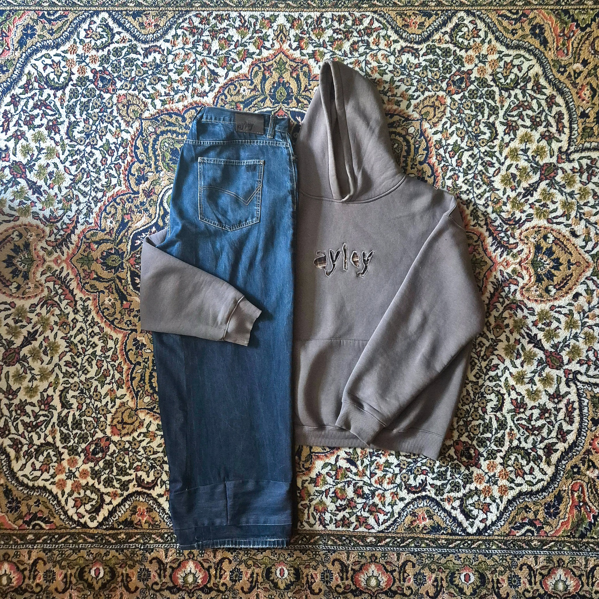
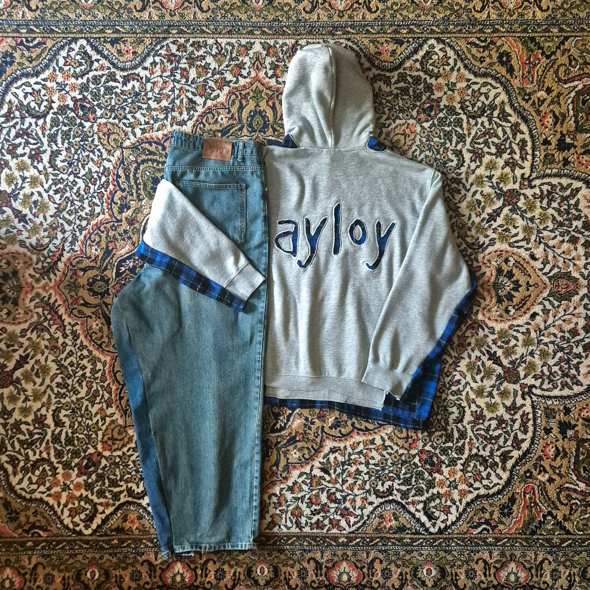

Neden böyle bir işe giriştim?
Kendime kıyafet dikmeye başladım çünkü istediğim kalıpta ve bedende parçaları bulmakta zorlanıyordum. Bulduğumda da fiyatları bana gereksiz yüksek geliyordu. Kendi diktiğim kıyafetleri giymek zamanla keyif aldığım bir hobiye dönüştü. Birinin üzerinde beğendiğim bir parça görünce, “Acaba bunu kendi yorumumu katarak tasarlayıp dikebilir miyim?” diye düşünmeye başladım. Bu işi deneye yanıla, kendi kendime öğrenmek istiyorum. Satış yapmayı ya da seri üretime geçmeyi düşünmüyorum.
Ayloy adı, Horizon Zero Dawn oyununun ana karakteri Aloy’dan geliyor. Oyunda karaktere seslenirken adını “Ay-loy” gibi söylüyorlardı. Bu söyleyiş hoşuma gitti, ben de Ayloy’u marka adı olarak kullanmak istedim.



Malzemelerimi uygun fiyata bulduğum ikinci el kıyafetlerden sağlıyorum. Beğendiğim bir parçayı, kumaşı ona uyan başka bir parçayla birleştirip istediğim gibi tek bir kıyafete dönüştürüyorum.
İlk denemem can sıkıntısından çıktı. Bir gün eski bir kot pantolonumu, yine eski bir eşofmanımla elde dikerek birleştirdim. Sonuç hiç de fena olmadı. Biraz daha planlı çalışıp dikiş makinesi kullanırsam daha iyi sonuçlar alabileceğimi düşündüm ve basit bir makine aldım. Makineyle ilk işim, doktorların giydiği bir forma pantolonunu genişletmekti. Makineyi ilk kez kullanmama rağmen pantolonu üzerime ve istediğim tarza uydurmayı başardım.
Yaptığım bazı parçaları giymek içimden gelmeyince dikiş konusunda daha çok şey öğrenmem gerektiğini fark ettim. Sosyal medyada dikiş ve kıyafet yapımıyla ilgili içerikleri izlemeye, gördüklerimden not almaya ve denemek istediğim projeleri araştırmaya başladım. Önce kot kumaşından bir kravat yaptım, ardından bir pantolonun paçasını daralttım. Sonra pantolon, gömlek ve sweatshirt gibi daha zor parçalara geçtim. İçime sinen işler de oldu, başarısız denemeler de. Zamanla dikiş makinesiyle kumaşa resim çizer gibi, nakışı andıran desenler yapmaya başladım. En çok tişörtlerde ilerledim. Şimdilerde çanta ve şapka yapmayı da deniyorum.
Bu uğraşı sürdürüp kendimi geliştirmek, giyerken keyif aldığım parçalar üretmek ve fırsat olursa çevremdekiler için de bir şeyler dikmek istiyorum.




Sosyal